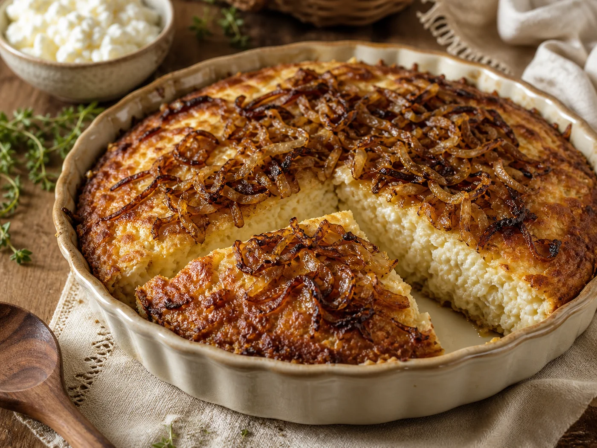
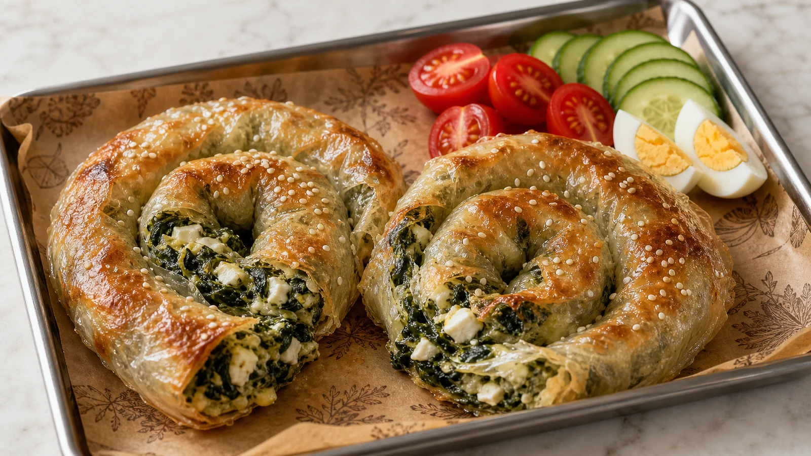
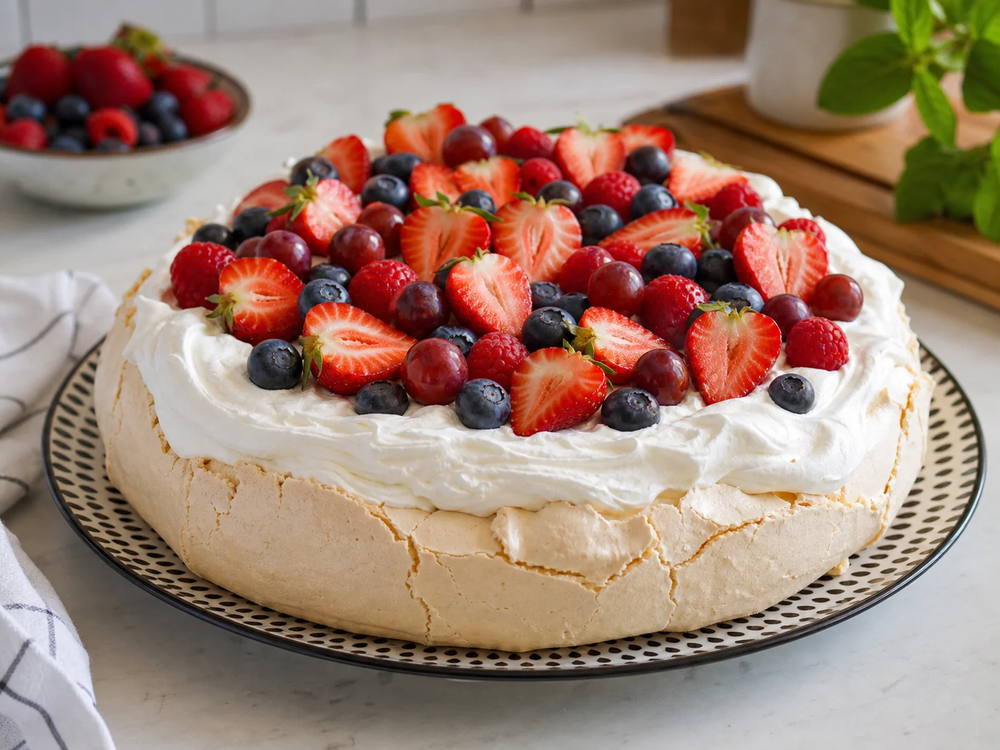
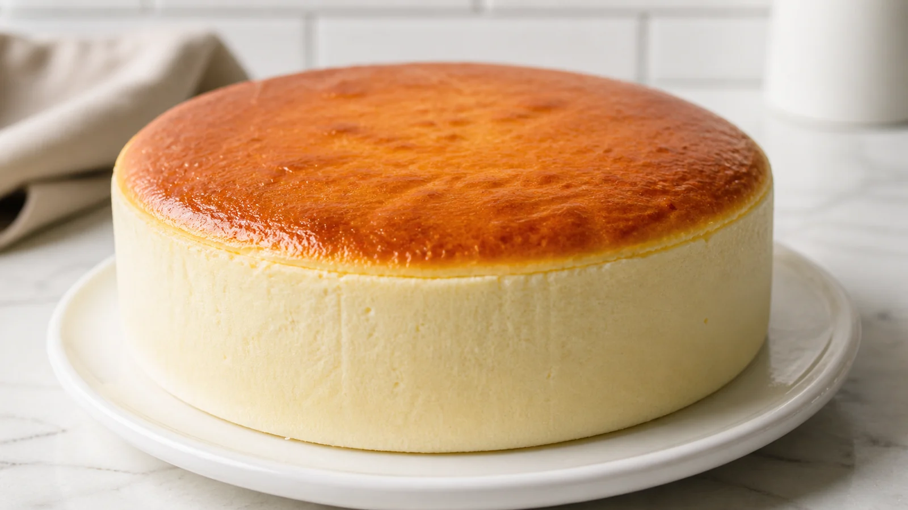
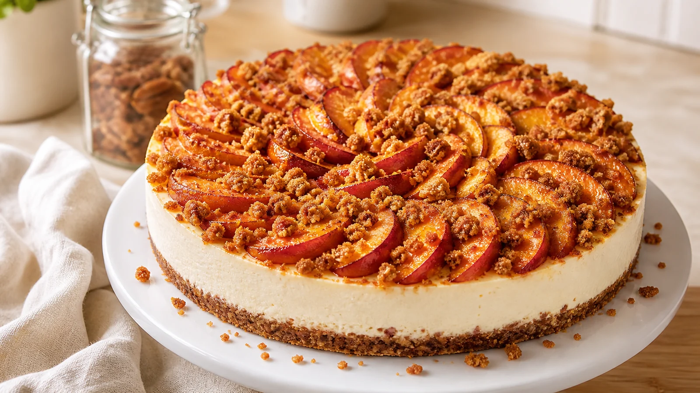
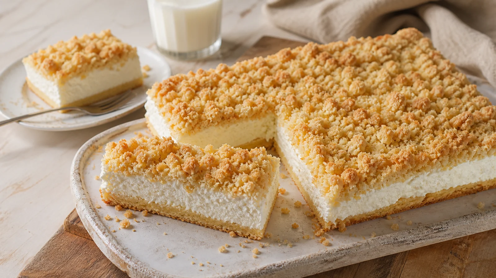

מהמטבחים
שלנו
~ אוסף מתכונים מהבית ~
חג חלב ודבש


לנשות המילואים
בשעה שהבעלים בשירות, אתן מחזיקות את הבית, את הילדים,
ואת השולחן החגיגי.
החוברת הזו היא חיבוק קטן מאיתנו אליכן -
אוסף מתכונים מהמטבחים של החברות בגדוד,
כדי שגם חג שבועות הזה יהיה לבן, מתוק, ומלא טעם של בית.
מה בפנים
- 01 פשטידת פצפוצי אורז משפחת קופר · נתנאל, פתח תקווה עמ׳ 04
- 02 בורקס תרד וגבינות בדפי אורז רועי קפלוטו · גדוד 7764, פיקוד העורף עמ׳ 05
- 03 פבלובה אווירית עם פירות יער רס״ן אלינור פרץ פוטישמן עמ׳ 06
- 04 עוגת גבינה אפויה בסיר ג'חנון המתכון של נטאלי סילבר עמ׳ 07
- 05 עוגת גבינה עם נקטרינות צלויות וקראמבל קינמון המתכון של מור עמ׳ 08
- 06 עוגת שמנת עם פרורים קלאסיקה ביתית · עוגת השבת של סבתא עמ׳ 09
פשטידת
פצפוצי אורז

~ מצרכים ~
- 4 גביעי קוטג'
- 6 ביצים
- 6 כוסות פצפוצי אורז
- 3 כפות גדושות אבקת מרק
- 3 בצלים מטוגנים, קצוצים
- שמן לטיגון
טיפ למשפחות:
כדי לתת לילדים להכין את הפשטידות בעצמם - טגנו מראש 20 בצלים קצוצים וחלקו לכוסות חד־פעמיות להקפאה. בכל פעם
שמתחשק, הילדים בוחרים, מערבבים, ונהנים מכל שנייה. 😘
~ אופן ההכנה ~
- מחממים תנור ל־180 מעלות.
- בקערה גדולה שמים את כל המצרכים: קוטג', ביצים, פצפוצי אורז, אבקת מרק ובצל מטוגן קצוץ.
- מערבבים היטב עד לקבלת בלילה אחידה.
- משמנים תבנית בינונית או מרפדים אותה בנייר אפייה.
- יוצקים את הבלילה לתבנית ומיישרים את פני הפשטידה.
- אופים בתנור שחומם מראש ל־180 מעלות עד להזהבה יפה (כ־40 דקות).
- מוציאים מהתנור, מצננים מעט - ומגישים בתיאבון.
⚠ זהירות - זו פשטידה ממכרת! 😘
בורקס תרד
וגבינות בדפי אורז

~ מצרכים ~
- למילוי
- חבילת עלי תרד טריים
- גביע גבינה לבנה 5%
- גביע קוטג׳ 5%
- 200 גרם פתיתי גבינת עמק
- 100 גרם קוביות גבינה בולגרית 5% / 16%
- ביצה אחת
- חצי כוס פירורי לחם
- כפית מלח
- חצי כפית פלפל שחור
- לעטיפה ולקישוט
- חבילת דפי אורז
- ביצה טרופה + מעט מים פושרים
- שומשום או קצח לפיזור
טיפ למשפחות:
דפי האורז עדינים מאוד - הכינו עמדה עם קערת מים פושרים, מגבת מטבח יבשה ומשטח עבודה משומן בקלות. כך כל בורקס
יישמר שלם בלי להידבק. 🌿
~ אופן ההכנה ~
- מערבבים בקערה את כל הגבינות יחד עם הביצה, כפית מלח, חצי כפית פלפל שחור ופירורי הלחם עד לתערובת אחידה.
- מרתיחים את עלי התרד במים כדקה, מסננים, מצננים ומייבשים במסננת היטב מכל נוזל. קוצצים גס ומוסיפים לתערובת הגבינות.
- טורפים ביצה עם מעט מים פושרים. טובלים 3 דפי אורז בזה אחר זה בבלילה, אחד אחרי השני.
- מניחים על משטח עבודה: דף ראשון, דף שני שחצי ממנו חופף לראשון, ודף שלישי שחצי ממנו חופף לשני - לקבלת רצועה ארוכה.
- פורסים מהמילוי לאורך הקצה התחתון, סוגרים לצורת נקניק ארוך, ולאחר מכן מגלגלים מבחוץ פנימה לצורת שבלול.
- מסדרים בתבנית מרופדת בנייר אפייה, מורחים מעט ביצה טרופה מעל ומפזרים שומשום או קצח.
- אופים בתנור שחומם מראש לחום טורבו 180° במשך כ־40 דקות, עד שהבורקס מזהיב יפה.
- מוציאים, מצננים מעט - ומגישים לצד סלט קצוץ, עגבניות שרי וביצה קשה. בתיאבון! 🌿
✦ פריך מבחוץ, רך וחלבי מבפנים - חג שבועות על הצלחת ✦
פבלובה אווירית
עם פירות יער

~ מצרכים ~
- למרנג
- 4 חלבונים מביצים גדולות
- 1 כוס סוכר
- קמצוץ מלח (לא חובה)
- לקצפת
- 1 מיכל שמנת להקצפה
- 2 כפות אבקת סוכר
- 2 כפות גבינת מסקרפונה או גבינת שמנת (לא חובה)
- לרוטב פירות יער
- 1 חבילת פירות יער קפואים (300 גרם)
- 3 כפות אבקת סוכר
- לקישוט
- פירות טריים - תותים, אוכמניות, פטל וענבים
- מעט אבקת סוכר לפיזור
טיפ למשפחות:
הקפידי שלא תהיה טיפת חלמון בחלבונים, ושקערת המיקסר וההקצפה יהיו נקיים לחלוטין משומן - אחרת הקצף לא יוקצף כמו
שצריך. ✨
~ אופן ההכנה ~
- למרנג:
- מחממים תנור ל־80 מעלות על מצב טורבו.
- מניחים את הסוכר בקערת מעבד המזון וטוחנים בכמה פולסים עד שגרגירי הסוכר נטחנים לגרגירים קטנים יותר (לא לטחון לאבקת סוכר). כך הסוכר נמס טוב יותר במרנג, אך זה לא חובה.
- מניחים את החלבונים בקערת מיקסר, מוסיפים את הסוכר וקמצוץ מלח. מקציפים על מהירות גבוהה כ־8 דקות, עד שמתקבל קצף לבן, מבריק ויציב מאוד, ולא רואים יותר גרגירי סוכר.
- מעבירים את כל הקצף לתבנית מרופדת בנייר אפייה, מקפידים שהנייר לא יזוז בתבנית, ואז מעצבים לצורה קעורה עם מעין בור באמצע - או לכל צורה אחרת שרוצים.
- מכניסים לתנור לאפייה של 5–6 שעות. בתום האפייה מכבים את התנור, פותחים מעט את דלת התנור ונותנים למרנג להתקרר לגמרי בתנור הכבוי.
- לקצפת:
- מניחים את השמנת להקצפה, אבקת הסוכר והגבינה בקערת מיקסר ומקציפים עד שנוצרת קצפת יציבה. שומרים במקרר עד לשימוש.
- לרוטב פירות יער:
- שמים את פירות היער הקפואים בסיר, מוסיפים אבקת סוכר, מביאים לרתיחה עדינה על אש בינונית ומבשלים 5 דקות. אם הפירות לא הוציאו מספיק נוזלים, אפשר להוסיף כמה טיפות מים. מצננים ומכניסים לקירור.
- חיבור המרכיבים:
- מרכיבים את הפבלובה ממש לפני ההגשה.
- ממלאים את הבור שנוצר במרנג בקרם, וגם מסביב - שתיווצר שכבה יפה שעוטפת את הכל, שכן הפבלובה תפסה גובה ואז ההבדל נראה. אפשר גם לשלב פירות בתוך הקרם.
- מקשטים את החלק העליון בעוד מעט קרם, ברוטב פירות היער ובפירות טריים כמו תותים. מגישים מיד.
☁ פריך מבחוץ, ענן בפנים - מתוק ולבן כמו חג שבועות ☁
עוגת גבינה אפויה
בסיר ג'חנון

~ מצרכים ~
- 6 ביצים XL או 7 ביצים L (מופרדות)
- 750 גרם גבינה לבנה
- 250 גרם גבינת שמנת
- 1 גביע גדול שמנת חמוצה
- 1 חבילת אינסטנט פודינג וניל
- 70 גרם קורנפלור
- ½ כוס קמח
- 250 גרם סוכר
- 1 כף תמצית וניל
טיפ למשפחות:
כשהעוגה מוכנה - לא פותחים את התנור! משאירים אותה בפנים עוד שעה כדי שתתקרר באיטיות, ורק אז מעבירים למקרר. כך
היא נשארת גבוהה ולא שוקעת. ✨
~ אופן ההכנה ~
- בקערה גדולה: שמים את החלמונים, מוסיפים את כל הגבינות (לבנה, שמנת ושמנת חמוצה) ומערבבים היטב.
- מוסיפים לאותה קערה את הקמח, הקורנפלור, האינסטנט פודינג ותמצית הוניל. טורפים במטרפה ידנית עד תערובת חלקה לחלוטין.
- בקערת מיקסר נקייה מקציפים את החלבונים עם הסוכר במהירות גבוהה כ־4–5 דקות, עד לקבלת קצף יציב.
- מוסיפים את קצף החלבונים אל תערובת הגבינות ומקפלים בעדינות עד לבלילה אחידה וחלקה.
- משמנים היטב בשמן סיר ג'חנון בקוטר 20 ס"מ ומוזגים פנימה את הבלילה.
- מניחים בתחתית התנור תבנית עם מים רותחים. מעל - את הסיר.
- אופים 10 דקות ב־200 מעלות. פותחים לרגע את דלת התנור לשחרור אדים.
- מנמיכים ל־150 מעלות וממשיכים לאפות שעה וחצי נוספת.
- מכבים את התנור, משאירים את העוגה בפנים עוד שעה לקירור איטי, ואז מעבירים למקרר.
✦ גבוהה, אווירית, נמסה בפה - הסוד של נטאלי על שולחן החג ✦
עוגת גבינה
עם נקטרינות וקראמבל

~ מצרכים ~
- לבסיס
- 100 גרם פקאן טחון דק
- 150 גרם ביסקוויטים טחונים דק
- 75 גרם חמאה מומסת
- למלית הגבינה
- 800 גרם גבינת שמנת 25–30% (4 גביעים)
- 400 גרם שמנת חמוצה 27% (2 גביעים)
- 1¼ כוס (250 גרם) סוכר לבן
- 1 כפית תמצית או מחית וניל
- 1 כפית קליפת לימון מגוררת דק
- 4 ביצים L בטמפ' החדר
- לקראמבל קינמון
- 1 כוס (140 גרם) קמח לבן (+2–4 כפות במידת הצורך)
- ¾ כוס (150 גרם) סוכר חום בהיר
- ½ כפית קינמון טחון
- ¼ כפית מלח דק
- 100 גרם חמאה מומסת
- לנקטרינות הצלויות
- 6–8 נקטרינות צהובות בטמפ' החדר
- 4 כפות סוכר (סה"כ, מחולק לשתי צלייות)
- 1 כפית קינמון טחון (סה"כ, מחולק לשתי צלייות)
טיפ למשפחות:
כל המרכיבים בטמפ' החדר - גבינה, שמנת, ביצים. כך המלית נטרפת חלקה לחלוטין בלי גושים, והעוגה יוצאת אחידה
וגבוהה. 🍑
~ אופן ההכנה ~
- בסיס
- מערבבים פקאן טחון, ביסקוויטים וחמאה מומסת לתערובת לחה ואחידה. מהדקים בתחתית רינג 22 ס"מ מרופד בנייר אפייה ומעלים כ־2–3 ס"מ בשוליים (לא חייב להיות אחיד). שומרים בקירור.
- צליית נקטרינות (חצי כמות)
- מחממים תנור ל־200°. חוצים ופורסים 3–4 נקטרינות לפרוסות בעובי ½ ס"מ. מערבבים עם 2 כפות סוכר ו־½ כפית קינמון. פורסים על תבנית מרופדת וצולים 10–15 דק׳ עד שהפרוסות רכות אך לא מתפרקות. מצננים.
- קראמבל קינמון
- מחממים תנור ל־175°. מערבבים בקערה סוכר חום, קמח, קינמון ומלח. מוסיפים חמאה מומסת ומערבבים עד שמתקבלים גושים בגדלים שונים. אם הבצק רטוב מדי - מוסיפים עוד 2–4 כפות קמח.
- פורסים בשכבה אחידה על תבנית מרופדת ואופים 10 דק׳. מערבבים ומחזירים ל־5 דק׳ נוספות עד שהקראמבל פריך וזהוב. מצננים.
- מלית גבינה
- טורפים בקערה גבינת שמנת, שמנת חמוצה, סוכר, וניל וקליפת לימון. מוסיפים את הביצים אחת־אחת תוך טריפה עד להטמעה מלאה.
- אפייה
- מנמיכים תנור ל־160°. מניחים בתחתית התנור תבנית עם מים רותחים.
- יוצקים בעדינות חצי ממלית הגבינה על הבסיס. מסדרים מעל את הנקטרינות הצלויות בשכבה אחידה ומפזרים מעליהן חצי מהקראמבל.
- יוצקים בעדינות את שאר המלית מעל - הקראמבל והפרי לא יצופו. אופים 60–70 דק׳ עד שהשוליים יציבים והמרכז עדיין רוטט מעט.
- מכבים את התנור, פותחים מעט את הדלת ומצננים שעה. מעבירים לקירור ללילה שלם.
- לפני ההגשה
- חוזרים על צליית הנקטרינות עם 3–4 נקטרינות נוספות (2 כפות סוכר + ½ כפית קינמון). מצננים.
- מחלצים את העוגה מהרינג. מסדרים מעל פרוסות נקטרינה במניפה מהקצה החיצוני אל המרכז, מפזרים את יתרת הקראמבל ומגישים. נשמרת עד 4 ימים בקירור.
🍑 קיץ ישראלי בצלחת - גבינתי, פרי קלוי וקראמבל פריך 🍑
עוגת שמנת
עם פרורים

~ מצרכים ~
- לבצק
- ½2 כוסות קמח אוסם
- 3 חלמונים
- 1 חבילת מרגרינה (200 גרם)
- 3 שקיקי סוכר וניל
- לשכבת השמנת
- 2 מיכלי שמנת מתוקה להקצפה
- 2 גביעי גבינה לבנה 9%
- 1 כוס סוכר
טיפ למשפחות:
הפרורים יוצאים יפים יותר אם הבצק קר מאוד. הקפיאו אותו כ־15 דקות לפני שמפוררים אותו במזלג - וקבלו פרורים
פריכים
שלא נמסים על השמנת. ✨
~ אופן ההכנה ~
- בצק ופרורים
- מערבבים בקערה את הקמח, החלמונים, המרגרינה הרכה ושקיקי סוכר הוניל לבצק אחיד.
- משטחים ⅔ מהבצק בתחתית תבנית מלבנית מרופדת בנייר אפייה, ואופים בתנור שחומם מראש ל־180° כ־15 דקות עד להזהבה קלה.
- את שאר הבצק שמים בתבנית נפרדת. אופים כ־10–12 דקות, ותוך כדי מפוררים עם מזלג ליצירת פרורים זהובים. מצננים.
- שכבת השמנת
- מקציפים את השמנת המתוקה עם הסוכר עד לקצפת יציבה. מקפלים פנימה בעדינות את הגבינה הלבנה עד תערובת אחידה.
- הרכבה
- כשהתחתית האפויה התקררה, מורחים עליה את תערובת השמנת בשכבה אחידה.
- מפזרים מעל את הפרורים עד לכיסוי מלא של פני העוגה.
- מעבירים לקירור לפחות 3 שעות, רצוי לילה. חותכים לריבועים ומגישים קר.
✦ הקלאסיקה של ילדות - פריך, קרמי, ומתגעגעים אליה תמיד ✦
בתאבון
תודה למשפחות שפתחו את המטבחים, ולכל הנשים שמחזיקות את הבית באהבה.